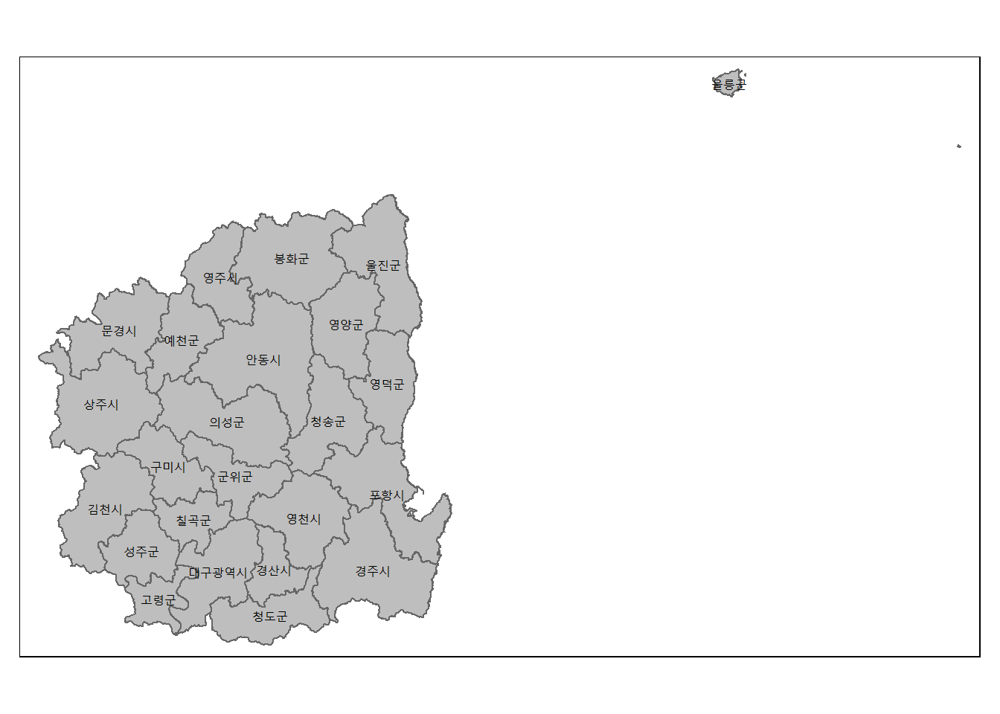

library(tidyverse)
library(rmarkdown)
library(sf)
library(tmap)
library(rgeoda)
library(gglorenz)
library(SpatialAcc)
library(DescTools)
library(spdep)대구·경북지역 의료서비스 접근성의
공간적 불균형에 관한 연구
- 2023년 1학기 공간정보분석 3 최종 프로젝트
Note
이 문서의 내용은 지리학전공 학부 졸업논문의 분석을 기반으로 작성되었습니다.
I. 서론
1. 연구 배경
지속적인 인구 감소로 인한 지방 도시의 쇠퇴와 과도한 인구 집중으로 인한 수도권의 과밀화 현상은 21세기 한국 사회에 ’지방소멸’의 위기를 불러왔다. 지방소멸 위험은 수도권과 지방 사이의 불균형을 심화시키고 있으며, 이는 다양한 공간적 불평등, 나아가 사회 문제를 유발하고 있다. 대표적인 사례가 바로 지방 중소도시에서 나타나는 의료 인프라의 붕괴이다. 공중보건의조차 구할 수 없는 이른바 ’무의촌’이 늘어나고 있으며, 이는 지역의 의료 공백으로 이어지고 있다. 전라남도 강진 의료원의 경우 1년 가까이 안과와 신경과 전공의를 충원하지 못하였고, 강원도 속초 의료원의 경우 고액의 연봉 제시에도 목표한 모집 인원이 채워지지 않았다. 지방소멸 위험 지역에서 나타나는 의료 공백은 의료 서비스의 지역 간 격차 심화를 야기한다.
이러한 의료 공백은 지방소멸 위험 지역에 거주하는 이들의 삶의 질 하락은 물론 사회적 비용의 증가, 나아가 의료 사각지대의 확산으로 이어진다. 이는 궁극적으로 기본권의 하나인 사회권의 침해로 이어진다는 점에서 해결이 시급한 문제이다. 그러나 의료 인프라 약화가 지방소멸 위험 지역 인구의 유출로 이어지고, 이것이 다시 해당 지역의 의료 공백으로 이어지는 악순환의 연결 고리 속에서 지방소멸 위험 지역의 의료 인프라 붕괴 문제는 쉽게 해결되지 않고 있다. 의료 인프라 붕괴는 지방소멸의 원인이자 결과로 동시에 작용하고 있으며, 이는 문제의 해결을 어렵게 하는 가장 큰 원인이다(하혜영, 김예성 2021).
2. 연구 목적
따라서, 본 연구는 의료서비스의 유형에 따른 접근성을 측정하고 그 공간적 불균형을 진단하는 것을 목적으로 한다. 먼저, 의료서비스의 개념과 전달 체계를 파악하여 의료서비스의 유형을 파악한다. 다음으로, 개별 유형의 의료서비스에 대한 접근성을 측정한다. 세 번째로, 측정된 접근성에 나타나는 불균형 양상을 진단한다. 마지막으로, 의료서비스 불균형의 공간적 분포를 탐색하여 의료서비스 취약지역을 식별한다. 세부적인 목적을 요약하면 아래와 같다.
- 의료서비스 접근성의 측정
- 의료서비스 접근성의 불균형 진단
- 의료서비스 접근성 불균형의 공간적 패턴 탐색
- 의료서비스 취약지역의 식별
II. 이론적 배경
1. 보건의료서비스
1) 정의
대한민국 보건의료기본법 제1장 제3조에서는 ’보건의료’를 “국민의 건강을 보호ㆍ증진하기 위하여 국가ㆍ지방자치단체ㆍ보건의료기관 또는 보건의료인 등이 행하는 모든 활동”으로,’보건의료서비스’를 “국민의 건강을 보호ㆍ증진하기 위하여 보건의료인이 행하는 모든 활동”으로 정의하고 있다.
2) 구분
보건의료서비스는 질환의 경중에 따라 1차 보건의료서비스, 2차 보건의료서비스, 3차 보건의료서비스로 구분된다. 먼저, 1차 보건의료서비스는 주로 발생 빈도가 높은 질병의 치료나 건강검진, 예방적 활동, 건강 관리 또는 증진 서비스에 해당하며, 국민 의료 수요의 약 8~90%를 차지한다. 많은 수요가 있는 만큼 의원급의 의료기관에서 이를 담당한다. 다음으로, 2차 보건의료서비스는 주로 경증 질병이나 간단한 수술 치료에 해당하며, 병원 또는 종합병원급의 의료기관에서 이를 담당한다. 마지막으로, 3차 보건의료서비스는 중증 질환이나 희귀·난치성 질환과 같이 전문화된 보건의료인을 필요로 하는 치료이며, 이는 주로 대학병원이나 상급 종합병원에서 이루어진다(이승욱, 백도명, 조명희 2015).
3) 특성
이러한 보건의료서비스가 가진 재화로서의 특성은 다음과 같다. 첫째, 공급자와 소비자 간 정보의 비대칭성이다. 소비자는 공급자가 제공하는 서비스에 대해 무지하며, 따라서 정보의 불균형이 발생한다. 그 결과, 보건의료서비스에서 소비자인 환자는 공급자인 보건의료인에게 절대적으로 의존하게 된다. 둘째, 수요의 불확실성이다. 보건의료수요의 발생은 곧 질병의 발생을 의미하며, 이는 예측하기 어려운 문제이다. 따라서 불확실성에 대비하기 위한 건강보험과 같은 위험 분산 장치가 존재한다. 셋째, 서비스에 내재된 불확실성이다. 보건의료서비스가 제공하는 질병의 치료는 그 성공 여부에 대한 예측이 어려우며, 서비스 제공자인 보건의료인에 따라 서비스의 양상과 결과에 차이가 발생한다. 따라서 보건의료인은 이러한 불확실성에 대하여 소비자인 환자에게 사전에 고지할 의무가 있다. 넷째, 법적으로 독점된 재화이다. 보건의료인 면허 제도에 의하여 서비스에 대한 독점 현상이 발생하며, 일반 시장과 같이 진입이 완전히 자유롭지는 않다. 다섯째, 외부효과가 발생한다. 예방접종이나 감염성 질환의 치료는 보건의료서비스 거래에 직접적으로 참여하지 않은 이들에게도 영향을 미치며, 따라서 정부는 정책적 개입을 통해 과대 또는 과소 제공을 방지하고 적정량의 보건의료서비스 제공을 도모한다. 여섯째, 보건의료서비스는 우량재이다. 이는 인간다운 삶을 영위하기 위하여 필수적인 재화이며, 국민 누구나 생존에 필요한 최소한의 보건의료서비스를 향유할 권리를 가진다. 또한, 거시적인 관점에서 국민 개개인의 건강 보호는 국가 전체에도 긍정적인 결과를 불러온다. 따라서 정부는 국민의 건강을 위하여 보건의료서비스의 생산, 소비, 분배를 완전한 시장 논리에 맡기지 않고, 적절한 개입을 추구하게 된다(이승욱, 백도명, 조명희 2015).
사회 정의와 형평성의 관점에서 이러한 보건의료서비스의 우량재적 특성은 중요한 시사점이라 할 수 있다. 지방소멸의 위험에 있는 지역에서는 우량재적 특성을 가진 보건의료서비스가 수요에 비해 적정 공급을 이루지 못할 가능성이 높고, 이는 해당 지역 주민들의 기본권 보장에 위협 요인으로 작용하기 때문이다. 정리하면, 보건의료서비스는 환자의 서비스 수요와 의료기관의 서비스 공급 능력이 적절한 균형을 이루어야 하며, 이것이 균형을 이루지 못할 경우 서비스 공급의 불균형은 국민 건강 증진에 위해 요인으로 작용, 궁극적으로는 국민의 기본권 침해로 이어질 수 있다.
4) 접근성
보건의료서비스의 접근성에 대한 정의는 연구자마다 다양하나, 통상적으로’소비자가 필요로 하는 때와 장소에서 적절한 서비스를 이용할 수 있는 기회’로 이를 정의하고 있다(Levesque 2013). 보건의료서비스의 접근성을 구성하는 요소에도 여러 가지가 있는데, 이수형(2014)은 이러한 국내외의 논의를 정리하여 보건의료서비스 접근성을 공간적 접근성과 비공간적 접근성으로 구분하였다.
그에 따르면, 공간적 접근성은 보건의료자원의 분포에 의한 공급 측면의 접근을 의미한다. 거주 지역 내의 가용 의료자원, 의료기관까지의 지리적 인접성, 이동시간, 교통망 등이 이에 해당한다. 한편, 비공간적 접근성은 서비스의 소비자가 보건의료를 이용할 수 있는 사회경제적 특성으로, 수요 측면의 접근을 의미한다. 성별이나 연령, 교육 수준, 경제적 지불 능력, 사회적 규범, 문화, 신념 등이 이에 해당한다. 본 연구에서는 이러한 보건의료서비스의 접근성 중 공간적 접근성에 초점을 맞추어 이를 측정하고자 한다.
2. 의료전달체계
1) 개념
앞서 살펴본 보건의료서비스의 특성상, 이들은 한정된 공급량으로 수요자인 국민에게 균등한 서비스를 제공할 수 있어야 하며, 이를 위해서는 의료전달체계의 구성이 중요하다. 의료전달체계는 가용 의료자원을 보다 효율적으로 활용함으로써 필요할 때 적시에, 적절한 의료기관에서, 적합한 의료인에게, 적정 서비스를 받을 수 있도록 제도화하는 것으로 정의되고 있다(윤우용, 채철균 2011). 우리나라에서는 민간 의료기관의 경우 의료법, 공공 의료기관의 경우 지역보건법에 근거하여 이를 조직화하고 있다.
2) 의료법에 의한 의료기관 구분
의료법은 민간 영역의 의료전달체계를 조직화하고 있다. 대한민국 의료법 제1장 제3조에서는 의료기관의 정의와 구분, 그리고 그 조건을 나열하고 있는데, 이에 따르면 ’의료기관’은 “보건복지부 장관의 면허를 받은 의사, 치과의사, 한의사, 간호사 등의 의료인이 공중 또는 특정 다수인을 위하여 의료업을 하는 곳”을 뜻하며, 크게 의원급 의료기관과 병원급 의료기관으로 구분된다.
먼저, 의원급 의료기관은 의료인이 주로 외래환자를 대상으로 의료행위를 행하는 의료기관을 말한다. 의원, 치과의원, 한의원 등이 해당한다. 다음으로, 병원급 의료기관은 의료인이 주로 입원환자를 대상으로 의료행위를 행하는 의료기관을 말한다. 병원, 치과병원, 한방병원, 요양병원, 정신병원, 종합병원이 이에 해당한다.
특히, 병원급 의료기관의 경우 법정 조건 충족 여부에 따라 이들을 병원, 종합병원, 상급종합병원으로 더 자세하게 구분할 수 있는데, 병원은 30개 이상의 병상을 갖추고 있어야 하며, 종합병원은 100개 이상의 병상과 다양한 진료과목과 그에 대한 전문의를 보유하고 있어야 한다. 한편, 상급종합병원은 종합병원 중 고난도의 의료행위를 전문적으로 행하는 기관을 대상으로 보건복지부 장관이 지정하며, 20개 이상의 진료과목과 그에 대한 전문의 보유, 전문의가 되려는 자에 대한 수련 기능 수행, 기타 보건복지부령으로 정하는 인력, 시설, 장비 등을 갖추어야 한다.
통상적으로 의료기관은 병상의 수와 서비스 대상 질병의 치료 난이도(혹은 요구되는 진료 과목의 수와 전문성)에 따라 앞서 살펴본 의료기관들을 다시 1차 의료기관, 2차 의료기관, 3차 의료기관으로 구분하게 된다. 1차 의료기관은 의원급 의료기관으로, 의원, 치과의원, 한의원 등이 해당하며 주로 외래 진료를 전담한다. 2차 의료기관은 병원급 의료기관으로, 병원, 치과병원 한방병원, 요양병원, 종합병원이 해당하며 외래 진료와 입원 진료를 동시에 전담한다. 3차 의료기관은 상급종합병원으로, 2차 의료기관과 동일하게 외래 진료와 입원 진료를 동시에 전담하나 중증 질환에 대한 고난이도의 전문적 의료 행위를 수행한다는 점에서 차이를 가진다.
서비스 소비자인 환자는 이러한 수직적 위계에 따른 의료전달체계 아래에서 질병의 경중에 따라 방문 의료기관을 합리적으로 선택하는 의사결정 과정을 거치게 되는데(이수형 외 2014), 이를 통해 보건의료서비스는 과잉 공급 또는 과잉 소비와 같은 수요와 공급의 불균형을 방지하고, 한정적인 재화를 효율적으로 운용할 수 있게 된다.
3) 지역보건법에 의한 의료기관 구분
지역보건법은 공공 영역의 의료전달체계, 특히 보건소와 같은 지역의료기관에 관한 사항을 조직화하고 있다. 대한민국 지역보건법 제1장 제2조에 따르면 ’지역보건의료기관’은 지역주민의 건강을 증진하고 질병을 예방 및 관리하기 위하여 설치하고 운영하는 보건소, 보건의료원, 보건지소 등을 지칭한다. 이에 따르면, 국가 및 지방자치단체는 지역주민의 건강 상태에 격차가 발생하지 않도록 지원하여야 하며, 지방자치단체장의 지역보건의료계획 수립 및 시행을 통하여 이를 현실화하여야 한다.
지역보건법 제3장에서는 지역보건의료기관을 보건소, 보건의료원, 보건지소로 구분한다. 먼저 보건소는 시군구 수준의 행정구역당 1개소(인구수에 따라 그 이상의 개수)로 설치되는 의료기관이다. 그중에서 의료법에서 규정한 병원의 요건을 갖춘 보건소를 보건의료원이라 하며, 보건소의 업무수행을 위해 필요하다고 판단되는 경우 읍면 수준의 행정구역에 설치되는 보건소의 지소를 보건지소라 한다. 이들 기관에는 공중보건의사가 상주하며 공중보건업무를 수행한다.
한편, 대한민국 농어촌 등 보건의료를 위한 특별조치법(농어촌의료법)에서는 농어촌과 같은 보건의료 취약지역에 보건진료 전담 공무원을 통하여 의료 서비스를 제공하는 보건의료시설을 보건진료소로 따로 규정하고 있다. 보건진료소에는 공중보건의사가 아닌 간호사, 조산사 등 대통령령이 정하는 자격을 가진 자가 보건진료 전담 공무원이 상주하며, 경미한 의료행위를 수행한다.
지금까지 살펴본 의료전달체계에 따른 의료기관의 유형을 정리하면 아래와 같다. 이들의 분류는 1차, 2차, 3차 의료서비스라는 서비스 기능에 따라, 민간과 공공이라는 서비스 제공 주체에 따른 것이며, 각각에 따라 소비자들에게 실질적으로 제공하는 서비스의 양과 질에는 분명한 차이가 존재할 수밖에 없다.
| 대분류 | 민간 | 공공 |
|---|---|---|
| 1차 의료기관 | 의원, 치과의원, 한의원 | 보건소, 보건지소, 보건진료소 |
| 2차 의료기관 | 종합병원, 병원, 치과병원, 한방병원, 요양병원, 정신병원 | 보건의료원 |
| 3차 의료기관 | 상급종합병원 |
본 연구에서는 이러한 차이를 고려하여 개별 의료기관이 제공하는 서로 다른 유형의 의료서비스를 개별적으로 고려하고자 하며, 이에 따라 1차 의료기관이 제공하는 1차 의료서비스, 2차 의료기관이 제공하는 2차 의료서비스, 3차 의료기관이 제공하는 3차 의료서비스, 공공 의료기관이 제공하는 공공 의료서비스로 의료서비스를 유형화, 개별 서비스에 대한 접근성을 측정하고 불균형을 진단할 것이다.
III. 사례 지역
1. 개관
본 연구의 대상 지역은 대구광역시 및 경상북도 지역이다. 대구광역시는 대한민국의 남동부에 위치한 광역시로, 동쪽으로 경상북도 경산시, 서쪽으로 경상북도 고령군과 성주군 등, 남쪽으로 경상남도 창녕군, 북쪽으로는 경상북도 청송군과 군위군에 접한다. 7구 1군의 행정구역으로 이루어져 있으며, 면적은 약 885km2, 주민등록인구는 2023년 6월 기준 약 236만 명이다. 경상북도는 대한민국의 남동부에 위치한 도로, 동쪽으로 동해, 서쪽으로 충청북도, 남쪽으로 경상남도와 대구광역시, 울산광역시, 북쪽으로 강원도와 경계를 접하고 있다. 10시 13군으로 이루어져 있으며, 면적은 약 19,036km2, 주민등록인구는 2023년 6월 기준 약 259만 명이다. 본래 대구광역시는 경상북도에 속해있다가 1981년 대구직할시로 승격, 1995년 대구광역시로 개칭되었다. 대구광역시와 경상북도는 지리적 인접성을 바탕으로 동일한 권역으로 묶여 사회경제적 측면에서 그 연결성이 높으며, 이들을 아울러 ’대경권’이라는 명칭을 사용하기도 한다. 본 연구에서는 이러한 연결성을 고려하여 분석 단위로 경상북도와 대구광역시를 함께 사례 지역으로 선정하였다.
basemap <- st_read(dsn = "./data/shp/Z_SOP_BND_ADM_DONG_PG.shp")[c(2,3,5)]Reading layer `Z_SOP_BND_ADM_DONG_PG' from data source
`C:\Users\songh\Desktop\Project_1\data\shp\Z_SOP_BND_ADM_DONG_PG.shp'
using driver `ESRI Shapefile'
Simple feature collection with 3500 features and 4 fields
Geometry type: MULTIPOLYGON
Dimension: XY
Bounding box: xmin: -10045 ymin: -42050.55 xmax: 632508.9 ymax: 568996.4
Projected CRS: Korea 2000 / Central Beltbasemap <- basemap %>% filter(str_starts(ADM_DR_CD, '37') | str_starts(ADM_DR_CD, '22'))
basemap <- basemap %>% rename("행정구역코드" = "ADM_DR_CD", "행정동명" = "ADM_DR_NM")
basemap_line <- st_read(dsn = "./data/shp/Z_SOP_BND_SIGUNGU_KD.shp") %>% st_set_crs(st_crs(basemap))Reading layer `Z_SOP_BND_SIGUNGU_KD' from data source
`C:\Users\songh\Desktop\Project_1\data\shp\Z_SOP_BND_SIGUNGU_KD.shp'
using driver `ESRI Shapefile'
Simple feature collection with 24 features and 3 fields
Geometry type: MULTIPOLYGON
Dimension: XY
Bounding box: xmin: 271170.5 ymin: 231146.8 xmax: 632441.8 ymax: 457064.6
CRS: NAcode <- read_csv("./data/csv/행정구역코드연계표.csv")[c(1,2,3,6,7)]
code$행정구역코드 <- as.character(code$행정구역코드)
code$행정기관코드 <- as.character(code$행정기관코드)
tm_shape(basemap_line) +
tm_borders() +
tm_fill(col = "gray") +
tm_text("SIGUNGU_NM", size = .6)
대구·경북지역은 2000년대 들어 인구의 지속적인 감소와 고령화의 심화를 경험하고 있다. 이러한 인구 감소는 인구 유출에 따른 사회적 감소의 영향이 크게 작용한 결과인데, 이는 청년층을 중심으로 한 경제활동인구의 순유출이 대다수를 차지한다. 특히 2017년과 2021년 사이의 5년간 15~29세 유출인구의 87.1%가 수도권으로 이동하는 등 수도권으로의 청년층 유출이 심각하며, 그에 따른 자연 감소의 영향 역시 이 지역의 인구 구조 변화에 점진적으로 영향을 확대할 것으로 예상된다(이형구, 배한이 2022).
이러한 양상은 대구광역시보다 경상북도에서 더욱 심각하게 나타나는데, 2020년 인구 소멸 지수에 따라 인구 소멸 고위험 읍면동을 순서대로 나열한 결과, 상위 읍면동에 경상북도가 다수 포진하고 있다. 총인구를 기준으로 상위 5개 읍면동 내에서 경상북도 안동시 산성면이 1위, 경상북도 예천군 북산면이 4위, 경상북도 군위군 남후면이 5위를 기록하고 있으며, 내국인 인구를 기준으로 상위 5개 읍면동 내에서 경상북도 군위군 남후면이 1위, 경상북도 예천군 노곡면이 2위, 경상북도 안동시 산성면이 3위를 차지하고 있다(국토지리정보원 2021). 정리하면, 대구·경북지역은 지속적인 인구 감소로 인한 인구 소멸의 위험에 직면해 있으며, 광역시인 대구에 비하여 경상북도는 그 위험이 극히 높아 동일한 권역 내에서도 소멸 위험의 격차가 심화되고 있음을 알 수 있다.
2. 의료격차의 실태
경상북도는 의료격차 문제가 가장 심각한 지역으로 꼽히며, 이는 다양한 사회 지표에서 확인할 수 있다. 경상북도와 대구광역시, 전국의 의료 관련 사회 지표를 비교하면 아래의 표와 같다.
| 대분류 | 전국 | 경상북도 | 대구광역시 |
|---|---|---|---|
| 인구 1000명당 의료기관 종사 의사 수 | 3.0명 | 2.1명 | 3.4명 |
| 면적당 상급종합병원 수 | 0.25개 | 0개 | 0.57개 |
| 응급의료시설 차량 이동 거리 10km 이외에 거주하는 취약인구 비율 | 24.73% | 43.24% | 5.39% |
| 치료 가능한 사망률 | 50.4명 | 57.8명 | 54.2명 |
첫 번째 지표는 인구 1000명당 의료기관 종사 의사 수이다. 2019년 통계청 지역통계총괄과의 자료에 따르면, 인구 1000명당 의료기관에 종사하는 의사의 수는 전국 평균 3.0명이며, 서울특별시에서 4.4명으로 최대치, 세종특별자치시에서 1.5명으로 최소치를 나타냈다. 세종특별자치시의 특수성을 고려하여 이를 제외하면, 경상북도가 2.1명으로 전국에서 최하위를 기록하고 있다. 이는 경상북도 지역이 인구, 즉 수요 대비 의료서비스의 공급에서 심한 불균형을 이루고 있음을 시사한다. 한편, 대구광역시는 인구 1000명당 의료기관에 종사하는 의사의 수가 4.3명으로 평균 이상을 기록하였다.
두 번째 지표는 면적당 상급종합병원의 개수이다. 2021년 보건복지부의 자료에 따르면 1km2당 전국 평균 0.25개소의 상급종합병원이 존재하며, 경상북도는 면적당 상급종합병원 수가 0개로 전국 최하위를 기록하였다. 이는 대구·경북지역 상급종합병원이 모두 대구광역시에 위치한 사실에서 기인하며, 대구광역시는 면적당 상급조합병원 수가 0.57개로 전국 평균을 웃돈다.
세 번째 지표는 응급의료시설 차량 이동 거리 10km(20분) 외에 거주하는 취약인구의 비율이다. 2019년 국토교통부의 자료에 따르면 응급의료시설 서비스권역 외에 거주하는 7세 이하 영유아와 65세 이상 고령 인구 비율은 경상북도에서 43.24%로 세종특별자치시 다음으로 가장 높았고, 서울특별시에서 0.02%로 가장 낮았다. 대구광역시는 5.39%로 응급의료시설 차량 이동 거리 10km(20분) 외에 거주하는 취약인구 비율이 적은 편에 속한다.
마지막 지표는 치료 가능한 사망률으로, 이는 양질의 보건의료서비스를 통해 피할 수 있는 원인에 의한 사망률을 의미한다. 2017년 보건의료실태조사 자료에 따르면, 경북에서 57.8명, 대구에서 54.2명의 수치를 기록하였다. 두 지역 모두 전국 평균을 웃도는 수치이며, 특히 경북의 경우 충청북도에 이어 두 번째로 높은 수치를 나타냈다. 적절한 의료서비스가 공급되었다면 피할 수 있었던 사망이라는 점에서, 경상북도의 의료 공백 문제가 가지는 심각성을 인지할 수 있다.
정리하면, 경상북도의 의료서비스는 의료인과 고차 의료기관 부족에 따른 공급 부족 문제를 겪고 있으며, 이에 따라 치료 가능한 사망률이 높게 나타나는 등 열악한 상황에 직면해 있다. 그에 반해 대구광역시는 대부분의 관련 지표가 전국 평균을 웃돌고 있으며, 상대적으로 의료서비스의 수요와 공급 사이에 균형이 나타난다. 이러한 현상은 대구광역시가 권역 내에서 고차 중심지 기능을 수행하면서 양질의 의료자원이 집중한 데에 따른 것으로 해석된다. 이는 경상북도 지역의 고령화와 맞물려 상대적으로 의료취약계층 비중이 높은 해당 지역에서 양질의 의료자원이 감소하는, 즉 의료서비스의 수요와 공급 사이에 불균형이 심화되는 결과로 이어지고 있다.
IV. 연구 방법
1. 접근성의 측정
본 연구에서는 의료서비스에 대한 공간적 불균형을 탐색하기 위하여 수요와 공급을 고려한 의료서비스 접근성을 활용하였다. 의료서비스에 대한 접근성은 2SFCA(Two-step Floating Catchment Area) 기반의 접근성 지수를 이용하여 측정한다. 2SFCA는 Radke and Mu(2000)가 제안하고 Luo and Wang(2003)에 의해 수정된 중력모형 기반의 공간적 접근성 측정 방법으로, 의료서비스를 비롯한 공공서비스 분야에서 널리 활용되는 지표이다. 행정구역 단위에 제한받지 않고 접근성의 지역적 차이를 보여줄 수 있다는 점에서 이점을 가지나, 서비스 이용권역 내에서의 거리 조락 효과를 무시한다는 한계가 있다(박정환, 우현지, 김영훈 2017).
2SFCA는 두 단계에 거쳐 공급시설에 대한 수요자 대비 공급능력과 수요 임계거리 내 서비스 공급시설의 인구대비 공급자 비율을 합산하여 접근성을 산출한다. 첫 번째 단계에서는 대상 지역의 모든 의료기관에 대한 서비스권역(임계거리) 내의 인구를 합산하여 이에 대한 의료기관의 공급 능력을 산출한다. 두 번째 단계에서는 개별 수요지역을 중심으로 수요지역에서 서비스권역 내에 있는 의료기관의 1단계 값을 합산한다. 구체적인 산출식은 아래와 같다. 첫 단계에서 Rj는 공급대비 수요, j는 의료기관, Pk는 의료기관 j 임계거리 내의 수요지 인구, Sj는 의료기관 j의 공급 능력, do는 임계거리, dkj는 이동 거리를 의미한다. 두 번째 단계에서 Ai는 수요지 i에서의 서비스 접근성이다.
\[ R_j = \frac {S_j}{\sum\limits_{k \in d_{kj} \le d_o} P_k} \]
\[ A_i = \sum\limits_{j \in d_{ij} \le d_o} R_j \]
따라서 2SFCA 기반 접근성 지수의 산출에는 다음과 같은 정보가 필요하다. 먼저, 개별 공급기관의 위치와 공급 능력에 관한 정보가 필요하다. 본 연구에서는 보건의료빅데이터개방시스템의 공공데이터인 2023년 기준 전국 병의원 및 약국 현황을 이용하여 대구·경북지역 내 의료기관의 위치와 유형을 파악하고, 자료에 기재된 병상의 수를 공급 능력으로 설정하였다. 다음으로, 개별 수요지의 위치와 수요량에 관한 정보가 필요하다. 본 연구에서는 개별 행정동(읍면동)의 중심점을 개별 수요지의 위치로 하였으며, 통계청의 센서스 통계를 이용하여 전체 인구의 수와 고령 인구의 수를 구득, 수요량으로 설정하였다. 마지막으로, 서비스권역에 해당하는 임계거리에 대한 정보가 필요하다. 본 연구에서는 진료권 설정에 대한 선행연구(이수형 외 2014)의 결과를 바탕으로 1차 의료기관과 공공 의료기관은 10km, 2차 의료기관은 20km, 3차 의료기관은 40km의 임계거리를 설정하였다.
본 연구에서 사용된 데이터의 출처는 아래와 같다.
의료기관 정보: 건강보험심사평가원 빅데이터 개방 포털
인구 정보: 행정안전부 읍면동별 주민등록인구통계
pop <- read_csv("./data/csv/행정안전부_지역별(행정동) 성별 연령별 주민등록 인구수_20230531.csv")[c(1,3,4,5,6,7)] %>%
filter(str_starts(행정기관코드, '27') | str_starts(행정기관코드, '47'))
hospital_coord <- read_csv("./data/csv/1.병원정보서비스.csv")[-c(1,3,5,6,7,8,9,10)]
hospital_info <- read_csv("./data/csv/3.의료기관별상세정보서비스_01_시설정보.csv")[c(2,6,17,18,19,20,21,22,23,24,25,26,27,28,29)]
hospital <- hospital_coord %>% inner_join(hospital_info, by = "요양기관명")
hospital <- distinct(hospital, 요양기관명, .keep_all = TRUE)
hospital <- hospital %>% rename("x" = "좌표(X)", "y" = "좌표(Y)")
hospital <- hospital %>% filter(!is.na(x)) %>% filter(str_starts(주소, '대구') | str_starts(주소, '경상북도') | str_starts(주소, '경북'))
sf_hospital <- st_as_sf(hospital, coords = c("x", "y"), crs = 4326, agr = "constant") %>%
st_transform(st_crs(basemap))
총병상수 <- rowSums(hospital[24:36])
sf_hospital <- cbind(sf_hospital, 총병상수)
sf_hospital <- sf_hospital %>% rename("기관유형" = "종별코드명")
pop <- pop %>% rename("총인구수" = "계")
pop$행정기관코드 <- as.character(pop$행정기관코드)
pop <- pop %>% full_join(code, by = "행정기관코드")
pop <- distinct(pop, 행정구역코드, .keep_all = TRUE)
sf_pop <- basemap %>% full_join(pop)
sf_pop <- sf_pop %>% filter(!is.na(총인구수)) %>% filter(!is.na(행정동명))
sf_hospital_t3 <- sf_hospital %>% filter(기관유형 == "상급종합")
sf_hospital_t2 <- sf_hospital %>% filter(기관유형 == "종합병원" | 기관유형 == "병원" | 기관유형 == "요양병원" | 기관유형 == "정신병원" | 기관유형 == "치과병원" | 기관유형 == "한방병원")
sf_hospital_t1 <- sf_hospital %>% filter(기관유형 == "의원" | 기관유형 == "치과의원" | 기관유형 == "한의원")
sf_hospital_tp <- sf_hospital %>% filter(기관유형 == "보건소" | 기관유형 == "보건지소" | 기관유형 == "보건진료소" | 기관유형 == "보건의료원")centroid_dk <- st_centroid(basemap)
centroid_coords <- st_coordinates(centroid_dk)
hospital_coords_t1 <- st_coordinates(sf_hospital_t1)
dist_matrix_t1 <- SpatialAcc::distance(centroid_coords, hospital_coords_t1, type = "euclidean")
hospital_coords_t2 <- st_coordinates(sf_hospital_t2)
dist_matrix_t2 <- SpatialAcc::distance(centroid_coords, hospital_coords_t2, type = "euclidean")
hospital_coords_t3 <- st_coordinates(sf_hospital_t3)
dist_matrix_t3 <- SpatialAcc::distance(centroid_coords, hospital_coords_t3, type = "euclidean")
hospital_coords_tp <- st_coordinates(sf_hospital_tp)
dist_matrix_tp <- SpatialAcc::distance(centroid_coords, hospital_coords_tp, type = "euclidean")
TSFCA_t1 <- ac(p = sf_pop$총인구수,
n = sf_hospital_t1$총병상수,
D = dist_matrix_t1, d0 = 10000, family = "2SFCA")
sf_pop <- sf_pop %>% mutate(TSFCA_t1 = TSFCA_t1)
TSFCA_t2 <- ac(p = sf_pop$총인구수,
n = sf_hospital_t2$총병상수,
D = dist_matrix_t2, d0 = 20000, family = "2SFCA")
sf_pop <- sf_pop %>% mutate(TSFCA_t2 = TSFCA_t2)
TSFCA_t3 <- ac(p = sf_pop$총인구수,
n = sf_hospital_t3$총병상수,
D = dist_matrix_t3, d0 = 40000, family = "2SFCA")
sf_pop <- sf_pop %>% mutate(TSFCA_t3 = TSFCA_t3)
TSFCA_tp <- ac(p = sf_pop$총인구수,
n = sf_hospital_tp$총병상수,
D = dist_matrix_tp, d0 = 10000, family = "2SFCA")
sf_pop <- sf_pop %>% mutate(TSFCA_tp = TSFCA_tp)2. 불균형의 진단
의료서비스 접근성의 불균형을 진단하기 위하여 지니 계수(Gini Coefficient)와 로렌츠 곡선(Lorenz Curve)을 활용하였다. 이들은 소득의 불평등을 평가하기 위해 경제학 분야에서 주로 사용되는 척도로, 개별 주체들 간의 자원 분배에 대한 직관적인 해석을 도와준다. 먼저, 지니 계수는 Gini가 불평등의 정도를 수치로 나타내기 위하여 고안한 것으로, 0에서 1 사이의 범위를 가지며 0에 가까울수록 완전한 평등을, 1에 가까울수록 완전한 불평등을 나타낸다. 이는 후술할 로렌츠 곡선을 사용하며 계산되는데, 대각선과 로렌츠 곡선 사이의 면적을 대각선과 로렌츠 곡선 사이의 면적과 로렌츠 곡선 하방의 면적을 더한 값으로 나눈 것이다(오지영, 박지원, 박소정 2022).
한편, Lorenz에 의해 제안된 로렌츠 곡선은 개별 주체 전체에 걸쳐 불평등의 평가 대상이 되는 지표의 누적 분포를 그래프로 표현한 것이다. x축에는 관측치의 누적 백분율을, y에는 불평등의 평가 대상 지표의 누적 백분율을 할당하며, 이에 따라 작성된 곡선은 평가 대상 지표가 관측치 전체에 걸쳐 어떻게 분포하는지를 보여준다. 대각선은 완전한 평등을 나타내며, 작성된 로렌츠 곡선이 이 균등분포선에서 멀어질수록 불평등이 커지는 것으로 볼 수 있다(오지영, 박지원, 박소정 2022).
본 연구에서는 불평등의 평가 대상을 의료서비스 접근성 지수로 설정하고, 개별 주체를 분석의 단위인 행정동으로 설정하여 로렌츠 곡선을 작성하고 지니 계수를 산출하였다.
3. 공간적 패턴의 탐색
본 연구에서는 의료서비스 접근성의 공간적 패턴 및 군집 양상을 살펴보기 위해 Moran’s I와 LISA(Local Indicators of Spatial Association) Cluster Map을 활용하였다. Moran’s I는 데이터의 전역적 공간적 자기상관을 평가하는데 사용되는 지수로, 데이터에 유사한 값들끼리 모이는 경향(정적 자기상관) 또는 유사하지 않은 값들끼리 모이는 경향(부적 자기상관)이 존재하는지를 정량화한다(Moran 1948). -1에서 1 사이의 값을 나타내며, 1에 가까울수록 데이터가 정적인 공간적 자기상관을, -1에 가까울수록 데이터가 부적인 공간적 자기상관을 나타냄을 의미한다. 아래와 같은 식을 통해 산출한다. n은 행정동의 총 개수, wij는 i와 j의 공간 가중치 행렬 요소, xi(j)는 행정동의 접근성 지수, μ는 xi의 평균값이다.
\[ I= \frac {n}{S _0} \frac {\sum \limits_ {i=1} ^{n} \sum \limits_ {j=1} ^{n} w _{ij} (x _{i} - \mu)(x _{j} - \mu)} {\sum \limits_ {i=1} ^{n} (x _{i} - \mu) ^{2}} \]
\[ S_0 = \sum \limits_ {i=1} ^{n} \sum \limits_ {j=1} ^{n} w _{ij} \]
LISA(Local Indicators of Spatial Association) 지표는 Local Moran’s I에 기반하여 특정 지역의 관측치 주변에 유사한 값들이 형성하는 공간적 집적의 유의도를 측정하는 기법으로, 데이터의 국지적 공간 상관성을 측정하고 공간 상관관계 유형을 식별하는 데 활용된다. Local Moran’s I는 데이터의 국지적 공간적 자기상관을 평가하는데 사용되는 지수로, 아래와 같은 식을 통해 산출한다(Anselin 1995).
\[ I_i = (x_i - \mu) \sum \limits_ {j=1} ^{n} w _{ij}(x_j-\mu) \]
이에 기반하여 산출된 LISA 지표는 공간적 자기상관의 군집 지역과 이례 지역을 표현할 수 있다. 4개의 유형이 존재하는데, 기준 지역의 값이 높고 주변에 이와 비슷한 값이 집중해있음을 나타내는 High-High, 기준 지역의 값이 높고 주변에 이와 다른 값이 집중해있음을 나타내는 High-Low, 기준 지역의 값이 낮고 주변에 이와 비슷한 값이 집중해있음 나타내는 Low-Low, 기준 지역의 값이 낮고 주변에 이와 다른 값이 집중해 있음을 나타내는 Low-High 패턴이 존재한다. 여기에서 High-High cluster, Low-Low cluster는 공간적 군집 지역, High-Low cluster, Low-High cluster는 공간적 이례 지역에 해당한다. 이는 주로 공간적 현상의 Hot spot 과 Cold spot의 식별에 활용된다.
본 연구에서는 경계를 공유하는 상하좌우 지역은 물론 정점을 공유하는 대각선 지역 역시 이웃으로 정의하는 queen의 방법을 이용한 공간 가중치 행렬을 구성하여 의료서비스 접근성의 Moran’s I를 산출하였다. 또한, Local Moran’s I 값을 산출하여 0.05의 유의수준에서 유의한 집적을 보이는 지역을 표현한 LISA Cluster Map을 작성하였다. 모든 데이터의 가공, 정제, 분석, 시각화는 R을 활용하여 이루어졌다.
V. 의료서비스 접근성
1. 서비스 수요와 공급
1) 수요
먼저, 대구·경북지역의 총인구수를 행정동 단위로 살펴본 결과는 아래와 같다. 이에 따르면, 대구광역시와 그에 인접한 경산시, 칠곡군, 구미시의 인구가 여타 군 지역에 비해 많음을 알 수 있다. 또한, 동해안의 포항시와 경주시의 인구 역시 많음을 알 수 있다. 총인구수가 많은 상위 3개의 행정동은 71,634명의 포항시 북구 장량동, 56,345명의 포항시 남구 오천읍, 52,556명의 대구광역시 달성군 다사읍으로 나타났으며, 상위 지역에는 주로 대구광역시, 포항시, 구미시, 경산시의 행정동이 많았다. 한편, 총인구수가 적은 하위 3개의 행정동은 778명의 상주시 화남면, 803명의 의성군 신평면, 845명의 의성군 안사면으로 나타났으며, 하위 지역에는 주로 군 지역의 행정동이 많았다.
tm_shape(sf_pop) +
tm_polygons(col = "총인구수", border.alpha = 0, legend.hist = TRUE) +
tm_shape(basemap_line) + tm_borders()2) 공급
본 연구에서는 의료서비스의 수요를 1차, 2차, 3차, 공공 의료기관의 분포를 이용하여 살펴본다. 먼저, 1차 의료기관인 의원, 치과의원, 한의원의 분포는 아래와 같다. 대구·경북지역에는 총 3,954개의 1차 의료기관이 운영되고 있으며, 이들은 주로 대구광역시와 구미시, 경산시, 포항시 등 인구가 많은 지역에 집중 분포하고 있음을 알 수 있다.
다음으로, 2차 의료기관인 병원, 요양병원, 정신병원, 치과병원, 한방병원, 종합병원의 분포는 아래와 같다. 대구·경북지역에는 총 402개의 2차 의료기관이 운영되고 있으며, 1차 의료기관과 마찬가지로 이들은 주로 대구광역시와 구미시, 경산시, 포항시 등 인구가 많은 지역에 집중 분포하고 있다.
세 번째로, 3차 의료기관인 상급종합병원의 분포는 아래와 같다. 대구·경북지역에는 총 5개의 상급종합병원이 운영되고 있는데, 경북대학교병원, 계명대학교동산병원, 대구가톨릭대학교병원, 영남대학교병원, 칠곡경북대학교병원이 그것이다. 이들은 모두 대구광역시에 소재하고 있으며, 경상북도에는 상급종합병원이 존재하지 않는다.
마지막으로, 공공 의료기관인 보건의료원, 보건소, 보건지소, 보건진료소의 분포는 아래와 같다. 대구·경북지역에는 총 555개의 공공 의료기관이 운영되고 있으며, 이들은 민간 의료기관과 달리 전역에 고르게 분포하고 있다. 이는 앞서 살펴본 지역보건법의 규정에 따라 이들이 설치되었기 때문이다. 공공 의료기관 중 가장 고차의 기능을 수행하는 보건의료원은 울릉군과 청송군에 위치한다.
paged_table(sf_hospital)tm_shape(basemap) + tm_fill() +
tm_shape(sf_hospital_t1) + tm_dots(col = "기관유형", palette = "Set2", size = .1) +
tm_shape(basemap_line) + tm_borders()tm_shape(basemap) + tm_fill() +
tm_shape(sf_hospital_t2) + tm_dots(col = "기관유형", palette = "Set2", size = .1) +
tm_shape(basemap_line) + tm_borders()tm_shape(basemap) + tm_fill() +
tm_shape(sf_hospital_t3) + tm_dots(col = "기관유형", palette = "Set2", size = .1) +
tm_shape(basemap_line) + tm_borders()tm_shape(basemap) + tm_fill() +
tm_shape(sf_hospital_tp) + tm_dots(col = "기관유형", palette = "Set2", size = .1) +
tm_shape(basemap_line) + tm_borders()2. 서비스 유형에 따른 접근성 지수
1) 1차 의료서비스
1차 의료서비스를 제공하는 1차 의료기관에 대한 접근성 지수를 산출한 결과, 전체 인구의 의료서비스 접근성 지수는 최소 0, 중앙값 0.002455, 평균 0.002328, 최대 0.006828의 값으로 나타났다. 1차 의료기관에 대한 접근성의 분포를 지도화하면 아래와 같다. 청도군과 의성군, 상주시 등에서 극히 높은 접근성이 나타났으며, 상대적으로 대구·경북지역 내에서 편중 없이 각 시·군마다 접근성이 높은 지역이 고루 존재하고 있다. 전체 인구의 접근성이 높은 상위 3개 행정동은 의성군 봉양면, 청도군 이서면, 청도군 화양읍으로 나타났다.
tm_shape(sf_pop) +
tm_polygons(col = "TSFCA_t1", palette = "YlGnBu", border.alpha = 0, legend.hist = TRUE) +
tm_shape(basemap_line) + tm_borders()1차 의료기관의 경우 제공하는 서비스의 난이도는 낮지만, 그 수요가 많다는 점에서 의료서비스의 접근성에 대한 지역적 편차가 상대적으로 덜한 것으로 판단된다. 한편, 고령 인구의 접근성이 높은 지역에 구미시와 대구광역시의 행정동이 집중 분포하는 점은 이들 지역에서 수요 대비 고령 인구의 인구가 타 지역에 비해 상대적으로 적게 분포한다는 사실에서 기인하는 것으로 해석할 수 있다.
2) 2차 의료서비스
2차 의료서비스를 제공하는 2차 의료기관에 대한 접근성 지수를 산출한 결과, 전체 인구의 의료서비스 접근성 지수는 최소 0, 중앙값 0.014667, 평균 0.013919, 최대 0.059059의 값으로 나타났다. 2차 의료기관에 대한 접근성의 분포를 지도화하면 아래와 같다. 안동시를 중심으로 가장 높은 접근성이 나타나며, 대구광역시와 포항시, 상주시 일대에서도 비교적 높은 접근성 지수가 분포한다. 전체 인구의 접근성이 높은 상위 3개 행정동은 안동시 북후면, 의성군 단촌면, 안동시 일직면으로 나타났다.
tm_shape(sf_pop) +
tm_polygons(col = "TSFCA_t2", palette = "YlGnBu", border.alpha = 0, legend.hist = TRUE) +
tm_shape(basemap_line) + tm_borders()2차 의료기관의 경우 1차 의료기관과 3차 의료기관의 중간적인 기능을 수행한다는 점에서 1차 의료기관에 비해 접근성에 지역적인 편차가 나타난다. 이러한 관점에서 2차 의료기관의 거점 지역은 안동시, 포항시, 대구광역시라 할 수 있다. 특이한 것은 안동시와 그 인접 시군의 사례인데, 이 지역은 절대적인 인구의 수가 적어 비슷한 개수의 2차 의료기관의 분포함에도 불구하고 극히 높은 접근성을 보이고 있다.
3) 3차 의료서비스
3차 의료서비스를 제공하는 3차 의료기관에 대한 접근성 지수를 산출한 결과, 전체 인구의 의료서비스 접근성 지수는 최소 0, 중앙값 0.000314, 평균 0.0007632, 최대 0.0015841로 나타났다. 3차 의료기관에 대한 접근성의 분포를 지도화하면 아래와 같다. 대구광역시와 이에 인접한 칠곡군, 경산시, 구미시, 청도군 등에서 의료서비스 접근성 지수가 높게 나타났다.
tm_shape(sf_pop) +
tm_polygons(col = "TSFCA_t3", palette = "YlGnBu", border.alpha = 0, legend.hist = TRUE) +
tm_shape(basemap_line) + tm_borders()3차 의료기관의 경우 치료 난이도가 높은 질병에 대한 의료서비스를 제공하며, 그 수요도 한정적이기에 고차 중심지인 대구광역시에 이들이 모두 분포하고 있는 것으로 해석할 수 있다. 모든 3차 의료기관이 대구광역시에 있으므로 대구광역시를 중심으로 높은 접근성이 나타나며 대구광역시에서 멀어질수록 접근성은 점차 낮아진다. 여기에서 문제는 대구광역시가 경상북도의 남쪽에 위치하며, 상대적으로 경상북도의 북부 지역은 이러한 3차 의료기관에의 접근성이 극히 낮아질 수 밖에 없다는 점이다.
4) 공공 의료서비스
공공 의료서비스를 제공하는 공공 의료기관에 대한 접근성 지수 산출한 결과, 전체 인구의 의료서비스 접근성 지수는 최소 0, 중앙값 0.0002305, 평균 0.00019051, 최대 0.00911794의 값으로 나타났다. 공공 의료기관에 대한 접근성의 분포를 지도화하면 아래와 같다. 청송군과 울릉군, 상주시 일대에서 접근성이 높게 나타났으며, 특히 청송군의 접근성 지수는 극단적으로 높다. 이러한 결과가 나타나는 이유는 청송군과 울릉군에 보건의료원이 존재하기 때문인 것으로 파악된다. 전체 인구의 접근성이 높은 상위 3개 행정동은 청송군 파천면, 청송군 청송읍, 울릉군 서면이다.
tm_shape(sf_pop) +
tm_polygons(col = "TSFCA_tp", palette = "YlGnBu", border.alpha = 0, legend.hist = TRUE) +
tm_shape(basemap_line) + tm_borders()공공 의료기관의 경우 상대적으로 그 분포가 고르기 때문에 병상 수가 많고 2차 의료기관급의 기능을 수행하는 보건의료원의 위치에 따라 접근성 지수가 큰 영향을 받는다. 따라서 청송보건의료원과 울릉보건의료원이 위치한 청송군 일대와 울릉도에서 접근성 지수가 높게 나타난다. 앞서 살펴본 민간의 2차 의료기관 거점이 안동시, 대구광역시, 포항시 등으로 나타났는데, 청송군과 같은 서북부 내륙지역과 울릉도 도서 지역은 공공 의료기관이 2차 의료기관 거점이 되고 있음을 유추해볼 수 있다.
VI. 의료서비스 접근성의 공간적 불균형
1. 불균형의 측정
1) 지니 계수
의료서비스의 지역 격차 진단을 위하여 지니 계수와 로렌츠 곡선을 산출하였다. 의료서비스와 대상 인구에 따른 접근성 지수의 지니 계수는 아래 표와 같다. 접근성의 지니 계수는 2차, 1차, 3차, 공공 의료서비스의 순서로 높게 나타났다.
Gini(sf_pop$TSFCA_t1)[1] 0.3676963Gini(sf_pop$TSFCA_t2)[1] 0.2988932Gini(sf_pop$TSFCA_t3)[1] 0.5182905Gini(sf_pop$TSFCA_tp)[1] 0.8027967| 1차 의료서비스 | 2차 의료서비스 | 3차 의료서비스 | 공공 의료서비스 | |
| 전체 인구 | 0.3676963 | 0.2988932 | 0.5182905 | 0.8027967 |
2) 로렌츠 곡선
아래는 접근성 지수에 대한 로렌츠 곡선이다, 이에 따르면, 1차 의료서비스에 대한 접근성은 2차 의료서비스에 대한 접근성에 비하여 지역적 격차가 크게 나타나는 것으로 파악되는 반면 2차 의료서비스에 대한 접근성은 다른 의료서비스에 대한 접근성에 비하여 지역적 격차가 적은 것으로 판단된다. 한편, 3차 의료서비스에 대한 접근성은 다른 민간 의료서비스의 접근성에 비하여 지역적 격차가 큰 것으로 파악되며, 이는 상급종합병원의 위치가 편중된 것에서 기인한 결과이다. 마지막으로, 공공 의료서비스에 대한 접근성 역시 큰 지역적 격차를 보이는 것으로 파악되며, 이는 공공 의료서비스에서 고차의 기능을 수행하는 보건의료원이 소수 지역에 분포하는 것에서 기인한 결과로 파악된다.
sf_gini <- sf_pop %>% pivot_longer(c(TSFCA_t1, TSFCA_t2, TSFCA_t3, TSFCA_tp), names_to = "유형", values_to = "index")
sf_gini %>%
filter(유형 %in% c("TSFCA_t1", "TSFCA_t2", "TSFCA_t3", "TSFCA_tp")) %>%
mutate(유형 = forcats::as_factor(유형)) %>%
ggplot(aes(x = index, color = 유형)) +
stat_lorenz(geom = "line", alpha = 0.5, lwd = 1) +
geom_abline(linetype = "dashed") +
coord_fixed() +
hrbrthemes::scale_x_percent() +
hrbrthemes::scale_y_percent() +
hrbrthemes::theme_ipsum_rc() +
theme(legend.title = element_blank())2. 불균형의 공간적 패턴
의료서비스의 공간적 불균형을 탐색하기 위하여 전역적 Moran’s I를 아래와 같이 계산하고, Moran Scatter Plot을 작성하였다. 모든 경우에서 유의수준은 0.01 이하로 통계적 유의성을 확인하였으며, 개별 Moran’s I 값을 확인하면 공공 의료서비스를 제외한 경우에서 모두 0.5 이상의 강한 정적 공간적 자기상관이 나타난다.
| 1차 의료서비스 | 2차 의료서비스 | 3차 의료서비스 | 공공 의료서비스 | |
| 전체 인구 | 0.5578406 | 0.7662046 | 0.9687971 | 0.2564926 |
w <- poly2nb(sf_pop)
wm <- nb2mat(w, style = 'B')
ww <- nb2listw(w, style = 'B')
moran(sf_pop$TSFCA_t1, ww, n = length(ww$neighbours), S0 = Szero(ww))$I
[1] 0.5578406
$K
[1] 2.16445moran.mc(sf_pop$TSFCA_t1, ww, nsim=99)
Monte-Carlo simulation of Moran I
data: sf_pop$TSFCA_t1
weights: ww
number of simulations + 1: 100
statistic = 0.55784, observed rank = 100, p-value = 0.01
alternative hypothesis: greaterrwm <- mat2listw(wm, style='W')
mat <- listw2mat(rwm)
moran.plot(sf_pop$TSFCA_t1, rwm)moran(sf_pop$TSFCA_t2, ww, n = length(ww$neighbours), S0 = Szero(ww))$I
[1] 0.7662046
$K
[1] 7.566141moran.mc(sf_pop$TSFCA_t2, ww, nsim=99)
Monte-Carlo simulation of Moran I
data: sf_pop$TSFCA_t2
weights: ww
number of simulations + 1: 100
statistic = 0.7662, observed rank = 100, p-value = 0.01
alternative hypothesis: greatermoran.plot(sf_pop$TSFCA_t2, rwm)moran(sf_pop$TSFCA_t3, ww, n = length(ww$neighbours), S0 = Szero(ww))$I
[1] 0.9687971
$K
[1] 1.046121moran.mc(sf_pop$TSFCA_t3, ww, nsim=99)
Monte-Carlo simulation of Moran I
data: sf_pop$TSFCA_t3
weights: ww
number of simulations + 1: 100
statistic = 0.9688, observed rank = 100, p-value = 0.01
alternative hypothesis: greatermoran.plot(sf_pop$TSFCA_t3, rwm)moran(sf_pop$TSFCA_tp, ww, n = length(ww$neighbours), S0 = Szero(ww))$I
[1] 0.2564926
$K
[1] 122.6847moran.mc(sf_pop$TSFCA_tp, ww, nsim=99)
Monte-Carlo simulation of Moran I
data: sf_pop$TSFCA_tp
weights: ww
number of simulations + 1: 100
statistic = 0.25649, observed rank = 100, p-value = 0.01
alternative hypothesis: greatermoran.plot(sf_pop$TSFCA_tp, rwm)1) 1차 의료서비스
1차 의료서비스 접근성의 LISA Cluster Map은 아래와 같다. 전체 인구의 접근성 측면에서 High-High cluster로 도출된 지역은 청도군 서부, 대구광역시 도심부, 의성군 서부, 상주시 중부이다. 이들은 1차 의료서비스에 대한 전체 인구의 접근성이 높은 행정동이 공간적 군집을 형성하고 있는 지역이다. 전체 인구의 접근성 측면에서 Low-Low cluster로 도출된 지역은 봉화·영양·울진군 일대, 군위·영천·청송·영덕군 일대, 김천시 남부이다. 이들은 1차 의료서비스에 대한 전체 인구의 접근성이 낮은 행정동이 공간적 군집을 형성하고 있는 지역이다.
acc_w <- queen_weights(sf_pop)
acc_lisa_t1 <- local_moran(acc_w, sf_pop[c("TSFCA_t1")])
acc_lisa_colors_t1 <- lisa_colors(acc_lisa_t1)
accr_lisa_labels_t1 <- lisa_labels(acc_lisa_t1)
acc_lisa_clusters_t1 <- lisa_clusters(acc_lisa_t1)
acc_lisa_t2 <- local_moran(acc_w, sf_pop[c("TSFCA_t2")])
acc_lisa_colors_t2 <- lisa_colors(acc_lisa_t2)
accr_lisa_labels_t2 <- lisa_labels(acc_lisa_t2)
acc_lisa_clusters_t2 <- lisa_clusters(acc_lisa_t2)
acc_lisa_t3 <- local_moran(acc_w, sf_pop[c("TSFCA_t3")])
acc_lisa_colors_t3 <- lisa_colors(acc_lisa_t3)
accr_lisa_labels_t3 <- lisa_labels(acc_lisa_t3)
acc_lisa_clusters_t3 <- lisa_clusters(acc_lisa_t3)
acc_lisa_tp <- local_moran(acc_w, sf_pop[c("TSFCA_tp")])
acc_lisa_colors_tp <- lisa_colors(acc_lisa_tp)
accr_lisa_labels_tp <- lisa_labels(acc_lisa_tp)
acc_lisa_clusters_tp <- lisa_clusters(acc_lisa_tp)
sf_plot <- cbind(sf_pop, acc_lisa_clusters_t1, acc_lisa_clusters_t2, acc_lisa_clusters_t3, acc_lisa_clusters_tp)
sf_plot <- sf_plot %>% mutate(cluster_t1 = case_when(
acc_lisa_clusters_t1 == 0 ~ "Not significant",
acc_lisa_clusters_t1 == 1 ~ "High-High",
acc_lisa_clusters_t1 == 2 ~ "Low-Low"
))
sf_plot$cluster_t1 <- ifelse(is.na(sf_plot$cluster_t1), "High-High", sf_plot$cluster_t1)
sf_plot <- sf_plot %>% mutate(cluster_t2 = case_when(
acc_lisa_clusters_t2 == 0 ~ "Not significant",
acc_lisa_clusters_t2 == 1 ~ "High-High",
acc_lisa_clusters_t2 == 2 ~ "Low-Low",
acc_lisa_clusters_t2 == 3 ~ "Low-High",
acc_lisa_clusters_t2 == 4 ~ "High-Low"
))
sf_plot$cluster_t2 <- ifelse(is.na(sf_plot$cluster_t2), "High-High", sf_plot$cluster_t2)
sf_plot <- sf_plot %>% mutate(cluster_t3 = case_when(
acc_lisa_clusters_t3 == 0 ~ "Not significant",
acc_lisa_clusters_t3 == 1 ~ "High-High",
acc_lisa_clusters_t3 == 2 ~ "Low-Low",
acc_lisa_clusters_t3 == 3 ~ "Low-High",
acc_lisa_clusters_t3 == 4 ~ "High-Low"
))
sf_plot$cluster_t3 <- ifelse(is.na(sf_plot$cluster_t3), "High-High", sf_plot$cluster_t3)
sf_plot <- sf_plot %>% mutate(cluster_tp = case_when(
acc_lisa_clusters_tp == 0 ~ "Not significant",
acc_lisa_clusters_tp == 1 ~ "High-High",
acc_lisa_clusters_tp == 2 ~ "Low-Low",
acc_lisa_clusters_tp == 3 ~ "Low-High",
acc_lisa_clusters_tp == 4 ~ "High-Low"
))
sf_plot$cluster_tp <- ifelse(is.na(sf_plot$cluster_tp), "High-High", sf_plot$cluster_tp)
tm_shape(sf_plot) + tm_polygons(col = "cluster_t1", palette = c("#B43104", "#045FB4", "grey"), border.alpha = 0) +
tm_shape(basemap_line) + tm_borders()이를 종합하면, 1차 의료서비스의 접근성이 높은 지역은 대구광역시 도심부, 청도군 서부, 의성군 서부, 구미시와 칠곡군의 접경지대 등에 한정적으로 분포하고 있다. 반면, 1차 의료서비스의 접근성이 낮은 지역은 경상북도 서북부 지역에 비교적 넓은 범위에 걸쳐 분포하고 있다. 이와 같은 현상은 대구·경북지역 내에서 1차 의료서비스의 공간적 불균형이 존재함을 의미하며, Low-Low cluster로 도출된 경상북도 서북부 지역 일대에 1차 의료서비스의 공백이 존재함을 시사한다.
2) 2차 의료서비스
2차 의료서비스 접근성의 LISA Cluster Map은 아래와 같다. 전체 인구의 접근성 측면에서 High-High cluster로 도출된 지역은 안동시, 포항시와 경주시의 접경지대이다. 이들은 2차 의료서비스에 대한 전체 인구의 접근성이 높은 행정동이 공간적 군집을 형성하고 있는 지역이다. 전체 인구의 접근성 측면에서 Low-Low cluster로 도출된 지역은 영덕·영양·울진군 일대, 군위·영천·청송군 일대, 성주·고령군 일대이다. 이들은 1차 의료서비스에 대한 전체 인구의 접근성이 낮은 행정동이 공간적 군집을 형성하고 있는 지역이다.
tm_shape(sf_plot) +
tm_polygons(col = "cluster_t2", palette = c("#B43104", "#B96D5A", "#7A8EAE", "#045FB4", "grey"), border.alpha = 0) +
tm_shape(basemap_line) + tm_borders()이를 종합하면, 2차 의료서비스의 접근성이 높은 지역은 안동시, 포항시와 경주시의 접경지대에 분포하고 있다. 반면, 2차 의료서비스의 접근성이 낮은 지역은 경상북도 동남부 일부와 안동시를 제외한 서북부 지역에 광범위하게 분포하고 있다. 이와 같은 현상은 대구·경북지역 내에서 2차 의료서비스의 공간적 불균형이 존재함을 의미하며, Low-Low cluster로 도출된 경상북도 서북부 지역 일대에 2차 의료서비스의 공백이 존재함을 시사한다.
3) 3차 의료서비스
3차 의료서비스 접근성의 LISA Cluster Map은 아래와 같다. 전체 인구의 접근성 측면에서 High-High cluster로 도출된 지역은 대구광역시와 그 인접 시군이다. 이들은 3차 의료서비스에 대한 전체 인구의 접근성이 높은 행정동이 공간적 군집을 형성하고 있는 지역이다. 전체 인구의 접근성 측면에서 Low-Low cluster로 도출된 지역은 대구광역시와 그에 인접한 시군을 제외한 경상북도 전역이다. 이들은 3차 의료서비스에 대한 전체 인구의 접근성이 낮은 행정동이 공간적 군집을 형성하고 있는 지역으로, 3차 의료서비스의 취약지역이라 할 수 있다.
tm_shape(sf_plot) +
tm_polygons(col = "cluster_t3", palette = c("#B43104", "#045FB4", "grey"), border.alpha = 0) +
tm_shape(basemap_line) + tm_borders()이를 종합하면, 3차 의료서비스의 접근성이 높은 지역은 대구광역시와 그 인접 지역이며, 접근성이 낮은 지역은 이들을 제외한 경상북도 전역이다. 이는 앞서 언급한 바와 같이 3차 의료서비스의 제공기관인 상급종합병원이 모두 대구광역시에 분포하는 것에서 기인하며, 이는 1차 및 2차 의료서비스와 달리 공공 의료서비스가 이를 보완하지 못한다는 점에서 3차 의료서비스의 공백 문제가 심각함을 시사한다.
4) 공공 의료서비스
공공 의료서비스 접근성의 LISA Cluster Map은 아래와 같다. 전체 인구의 접근성 측면에서 High-High cluster로 도출된 지역은 청송군, 의성군 남부, 상주시 일대이다. 이들은 공공 의료서비스에 대한 전체 인구의 접근성이 높은 행정동이 공간적 군집을 형성하고 있는 지역이다. 전체 인구의 접근성 측면에서 Low-Low cluster로 도출된 지역은 대구광역시와 포항·경주시 일대이다. 이들은 공공 의료서비스에 대한 전체 인구의 접근성이 낮은 행정동이 공간적 군집을 형성하고 있는 지역이다.
tm_shape(sf_plot) +
tm_polygons(col = "cluster_tp", palette = c("#B43104", "#7A8EAE", "#045FB4", "grey"), border.alpha = 0) +
tm_shape(basemap_line) + tm_borders()이를 종합하면, 공공 의료서비스의 접근성이 높은 지역은 청송군, 의성군 남부, 상주시 일대에 분포하고 있다. 이들은 앞서 민간 영역의 1차, 2차 의료서비스에 공백이 존재했던 지역으로, 이 지역은 공공 의료서비스에 의하여 의료서비스의 공간적 불균형이 보완되고 있음을 의미한다. 반면, 공공 의료서비스의 접근성이 낮은 지역은 대구광역시와 포항·경주시 일대로, 이들은 민간 영역의 1차, 2차 의료서비스가 충분히 공급되고 있는 지역임에 따라 공공 의료서비스의 접근성이 상대적으로 낮게 설계된 것으로 판단된다.
VII. 결론
지금까지 의료서비스의 유형에 따른 접근성을 측정하고 그 공간적 불균형을 진단하여 의료서비스 취약지역을 식별하였다. 먼저, 선행연구 검토를 통하여 의료서비스의 개념과 전달 체계를 파악하고 공급 주체와 수행 기능에 따른 의료서비스의 유형을 1차, 2차, 3차, 공공의료서비스로 구분하였다. 다음으로, 2SFCA 기반의 접근성 지수를 활용하여 개별 유형의 의료서비스에 대한 접근성을 측정하였다. 세 번째로, 측정된 접근성에 나타나는 불균형 양상을 지니 계수와 로렌츠 곡선을 통해 진단하였다. 마지막으로, Moran’i 와 LISA 지표를 활용하여 의료서비스 불균형의 공간적 분포를 탐색, 의료서비스 취약지역을 식별하였다.
대구·경북지역의 의료서비스는 유형에 따라 접근성의 공간적 분포에 차이가 존재하였으며, 그 불균형 정도는 3차 의료서비스와 공공 의료서비스에서 큰 것으로 나타났다. 대구·경북지역의 의료 취약지역은 주로 경상북도의 서북부 지역에 분포하는 군 단위의 행정구역으로 식별되었다. 공공 의료서비스의 경우 민간에서 제공하는 1차와 2차 의료서비스의 공간적 불균형을 완화하기 위한 차원에서 불균형이 발생하고 있는 것으로 해석할 수 있으나, 3차 의료서비스의 경우 공공 의료서비스에 의한 보완이 이루어지지 못한다는 점, 그럼에도 불구하고 권역의 남쪽에 있는 대구광역시에 모든 상급종합병원이 위치하면서 불균형을 심화시키고 있다는 점이 문제로 지적되었다. 한편, 민간에 의해 제공되는 1차, 2차 의료서비스 역시 공공 의료서비스와 구체적인 기능 또는 비공간적 접근성 측면에서 차이가 존재할 수 있으므로 이들 간의 상호 연계와 보완이 제대로 이루어지지 않는다면 의료 취약지역은 더욱 확대될 수 있음에 유의해야 할 것이다.
본 연구의 한계는 다음과 같다. 먼저, 접근성 측정의 단순성이다. 접근성 측정에서 실제 인구의 분포를 세부적으로 고려하지 않고 행정동의 중심을 수요지로 설정하였으며, 임계거리 역시 현실의 네트워크 거리가 아닌 직선거리를 고려하여 접근성 측정의 정밀도가 떨어진다. 다음으로, 다양한 의료서비스 유형 간의 상호 연계성을 고려하지 못하였다. 1차, 2차, 3차, 공공 의료서비스로 구분하여 접근성을 측정, 공간적 불균형을 탐색하였기 때문에 실제로 이들이 어떤 연계를 이루며 상호 보완 또는 경쟁하는지에 대한 고려가 미흡하다. 마지막으로, 접근성 측정에서 공간적 요소만을 고려하고 비공간적 요소는 무시하였다. 실세계에서 의료서비스의 접근성에는 지리적 인접성이나 서비스의 수요-공급 능력 외에도 다양한 사회적, 심리적 요인들이 작용하므로, 이를 반영한다면 연구의 정밀성이 제고될 것으로 판단된다.
참고문헌
- 국토지리정보원, 2021, 대한민국 국가지도집 III, 국토지리정보원.
- 박정환, 우현지, 김영훈, 2017, 수정 3SFCA 모형을 활용한 응급의료서비스 접근성 분석: 충청남도를 사례로, 한국지역지리학회지 23(2), pp. 388-402.
- 오지영, 박지원, 박소정, 2022, 사회경제적 불평등 측정방법 분석과 시사점, 대외경제정책연구원.
- 윤우용, 채철균, 2011, 의료시설의 법적 분류기준 비교 분석에 관한 연구 (1), 의료·복지 건축 17(2), pp. 27-34.
- 이수형, 2014, 환자이동을 고려한 의료자원의 지역적 분포 – 당뇨병과 고혈압을 중심으로 -, 서울대학교 박사학위논문.
- 이수형, 신호성, 박종현, 김지연, 오영인, 조훈, 2014, 환자이동과 의료자원 분포를 고려한 진료생활권 분석, 한국보건사회연구원.
- 이승욱, 백도명, 조명희, 2015, 보건학개론, 서울대학교 출판문화원.
- 이형구, 배한이, 2022, 대구경북지역의 인구감소·지방소멸위험 분석 및 시사점, 한국은행.
- 하혜영, 김예성, 2021, 지방소멸 위기지역의 현황과 향후 과제, 국회입법조사처.
- Anselin, L., 1995, Local indicators of spatial association–LISA, Geographical Analysis 27, pp. 93-115.
- Levesque JF, Harris MF, Russell G., 2013, Patient-centred access to health care:conceptualising access at the interface of health systems andpopulations, International Journal for Equity in Health 12(18), pp. 1-16.
- Luo, W., and Wang, F., 2003, Measures of spatial accessibility to health care in a GIS environment: synthesis and a case study in the Chicago region, Environment and Planning B 30(6), pp. 865-884.
- Moran, P., 1948, The interpretation on statistical maps, Journal of the Royal
- Statistical Society B 10, pp. 243-251.
- Radke, J., and Mu, L., 2000, Spatial Decompositions, Modeling and Mapping Service Regions to Predict Access to Social Programs, Annals of GIS 6(2), pp. 105–112.